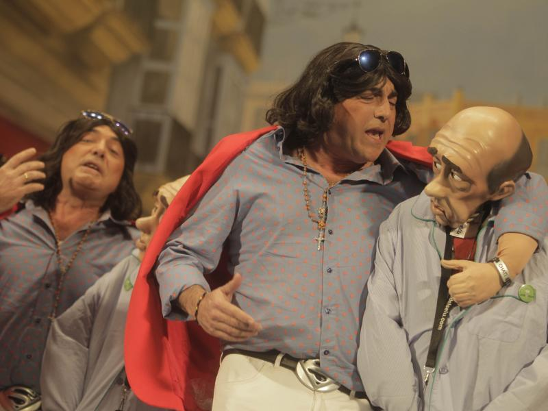
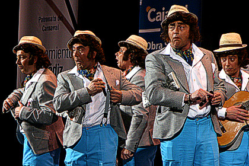
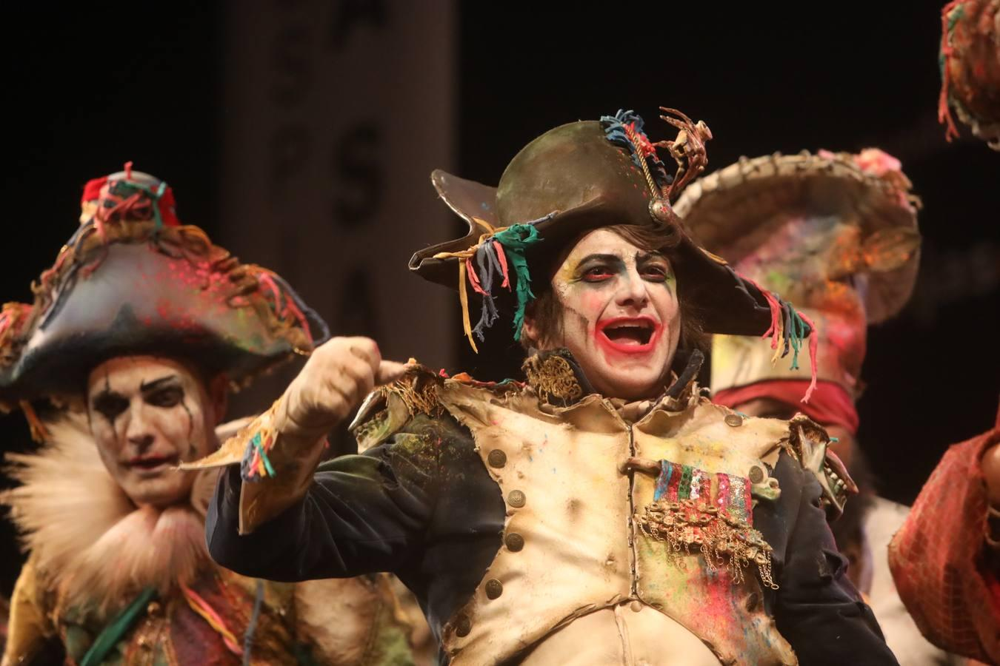
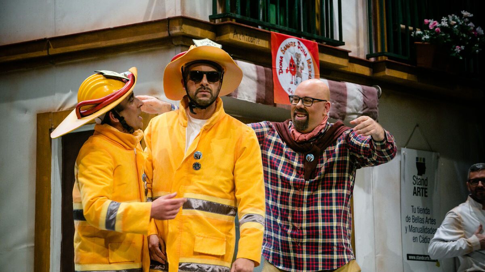
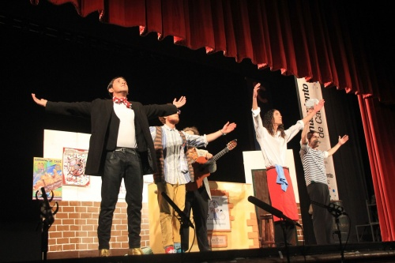
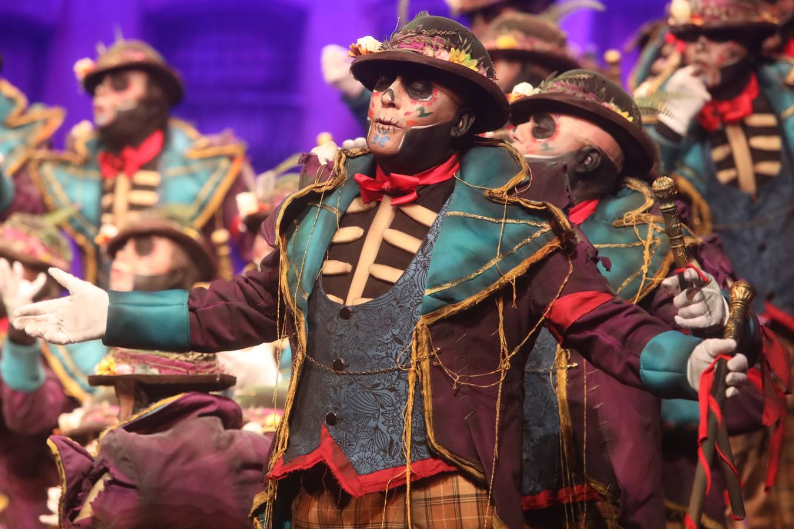

En esta página conocerás las agrupaciones más importantes de la Historia
Encontrarás las agrupaciones divididas por modalidades, si no sabes cuantas modalidades hay, puedes ir a Concurso de Agrupaciones para conocer mejor cómo se divide el COAC o concurso oficial de agrupaciones de carnavalChirigotas
Si me pongo pesao me lo dices
Empezando con las chirigotas, podemos encontrar al primer premio del año 2016, la Chirigota si me pongo pesao me lo dices, cuyo autor fue Jose Luis García Cossío conocido popularmente como el selu, esta chirigota recibió el calor del público desde el primer día ya que pusieron en escena un disfraz que resultaba muy original y con el que jugaban durante todo el repertorio Los Enteraos
Seguimos con otra chirigota del selu, en este caso la chirigota de los enteraos, tercer premio del año 2009 a pesar de la opinión popular que la colocaba como primer premio claro además, cabe destacar que esta agrupación ha sido premiada con el primer premio del concurso del mileno organizado por canal sur radio en los carnavales pasados debido al COVID-19 y a la pandemia, por lo que podemos decir que los enteraos recibió su merecido premio 12 años después La Familia Pepperoni
La chirigota la familia Pepperoni está considerada como una de las chirigotas más relevantes dentro del mundo del carnaval de Cádiz, esto es debido a que uno de sus pasodobles como es el denominado "Me han dicho que el amarillo" es actualmente el himno oficial del equipo de fútbol de la ciudad de Cádiz, esta agrupación tuvo la autoría de Manolo Santander y José Manuel Prada, a pesar del reconocimiento que ha tenido tiempo después, solo recibió el cuarto premio en el COAC de 1998
Comparsas
Los Carnivales
Seguimos con otra categoría, en este caso las comparsas y como no podría ser de otra manera, empezamos con una comparsa de Antonio Martínez Ares, en este caso es la comparsa Los Carnívales, primer premio del COAC 2019, podemos decir que esta comparsa es una vuelta a los orígenes del autor ya que se puede apreciar un estilo más directo con una música más simple pero siempre con la calidad de letras a la que estamos acostumbrados Los Millonarios
La comparsa Los Millonarios ha sido sin duda un antes y un después en la Historia del carnaval de Cádiz, esta comparsa es obra de Juan Carlos Aragón Becerra (1967-2019), este autor siempre nos ha acostumbrado a disfrutar de letras cargadas de filosofía, ironía y mucha carga contra la sociedad, nos encontramos delante de una agrupación la cual recibió el primer premio del COAC 2015 y que también ha sido premiada como la mejor comparsa del siglo en el concurso del milenio organizado por canal sur radio en el pasado año 2021
Los Ángeles Caídos
La siguiente comparsa también es autoría de Juan Carlos Aragón, en este caso se trata de su segunda comparsa Los Ángeles Caídos la cual recibió el primer premio del COAC 2002 y fue el primer primer premio que recibió el autor en esta modalidad, cabe mencionar que este año el grupo que formaba la comparsa era el antiguo grupo que salía con Antonio Martínez Ares, por lo que se trataba ya de un grupo de personas las cuales tenían ya bastante experiencia sobre las tablas
Cuartetos
El equipo A minúsucla-Comando Caleti
Empezamos con la categoría de cuartetos, en este caso nos encontramos con el cuarteto El equipo A minúsucla-Comando Caleti, obra del cómico Manuel Morera, esta agrupación fue premiado por el primer premio del COAC de 2018 cabe destacar que este año fue el regreso al concurso de dicho autor tras 4 años sin ir a concursar debido a temas laborales y personales
Brigada Amarilla, agüita con nosotros
Seguimos con otro cuarteto de Manuel Morera, en este caso el llamado Brigada Amarilla, agüita con nosotros, premiado con el primer premio del COAC 2019, después de venir del año 2018 con un gran primer premio nunca es fácil enfrentarse a otro concurso debido a las altas expectativas que tiene la gente sobre ti, bien pues parece que Manuel Morera no le teme a nada y llevó este gran cuarteto para repetir primer premio Los que están al pié del cañón
El siguiente cuarteto es obra de Iván Romero Castellón y se llamó Los que están al pié del cañón aunque este grupo siempre es más conocido como el cuarteto de los niños, ya que sus integrantes son relativamente jóvenes, este cuarteto recibió el primer premio del COAC de 2013 siendo así la primera vez que conseguían esta calificación tras muchos años compitiendo, cabe decir que este cuarteto es todavía a día de hoy recordado por el aficionado ya que pudo significar la consolidación de este grupo entre los más favoritos del concurso todos los años Coros
La Gaditana
Terminando ya con las agrupaciones más importantes llegamos a la categoría de coros y como no podría faltar, tenemos un coro de Julio Pardo, en este caso tenemos al coro La Gaditana que fue premiada con el primer premio del COAC de 2001 cabe decir que lo que pudo ser el factor diferencial de este coro respecto al resto fue el hecho de que en cada fase del concurso cantaron un popurrí totalmente diferente por lo que esta agrupación llevó un total de 4 popurrís diferentes al concurso
Los del patio
El coro Los del patio pudo ser la mayor sorpresa que hubo en el COAC de 2019 puesto que el primer premio de la modalidad de coros suele ser siempre conquistado por Julio Pardo este año fue el coro de David Fernández y José Manuel Pedrosa el que se lo llevó y además con una clara ventaja respecto al segundo puesto, no se le puede quitar ningún merito puesto que tanto la puesta en escena como el repertorio cantado durante todo el concurso fue claro merecedor del premio que al final recibieron Los Desoterraos
Terminamos las agrupaciones con el coro Los Desoterrados, agrupación que recibió el primer premio del COAC 2000, es obra de Rafael Pastrana Guillén más bien conocido como Faly Pastrana y José Ramón Zamora Cabeza conocido también como Quico Zamora, cabe mencionar que este coro aparte de llevar un repertorio merecedor claramente de primer premio llevó una puesta en escena impresionante hasta el punto de que hasta el día de hoy no se ha visto nada que se le pueda igualar